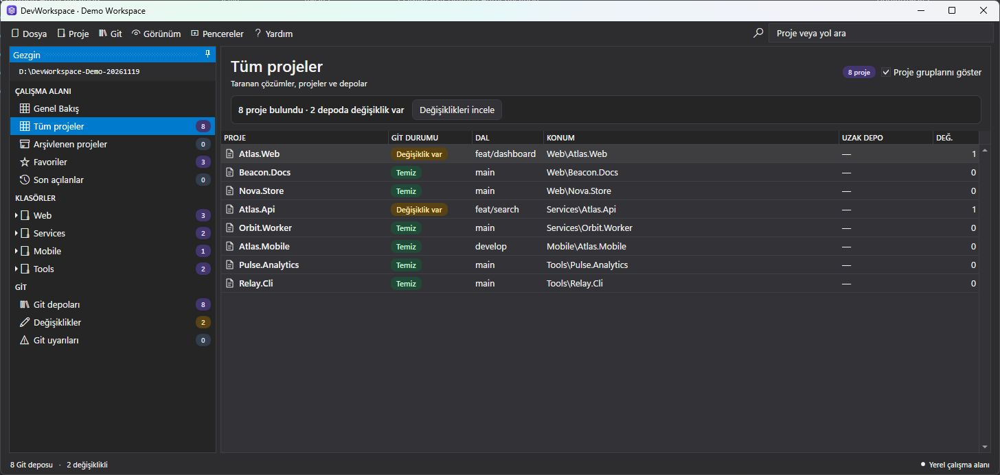

Discover your projects
Choose a development folder. Find supported project manifests across frameworks, group related components and search the results.
YOUR DEVELOPMENT FOLDER, WITH CONTEXT
Find your next task, not another folder. Bring projects, Git changes and development tools into one Windows workspace.

.NET · React · Flutter · Python · Rust · Go · Java
LESS SEARCHING. MORE BUILDING.
A workbench for the moments between projects — when you need to understand what changed and get back to work.
Choose a development folder. Find supported project manifests across frameworks, group related components and search the results.
Check repository status, inspect diffs and history, and review supported dependency security findings without losing your workspace context.
Open development tools, run project commands and save launch profiles for work you repeat.
A DESKTOP HOME FOR YOUR WORK
Project discovery stays on your machine. Git, GitHub, security checks and updates use their own services when needed. Optional usage counters stay local and are off by default.
Bring your own Git, SDKs and project tools. Available commands depend on your project type and installed tools.
Read the privacy and sharing guideMAKE ROOM FOR YOUR NEXT PROJECT